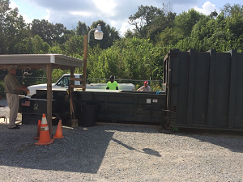

Home >
Government > Solid Waste Management
> Landfill / Convenience Centers
Convenience Centers
All locations are open at the following times:
- Monday, Wednesday, and Friday - 6:00 a.m. to 6:00 p.m.
- Saturday - 9:00 a.m. to 6:00 p.m.
- Sunday - 1:00 p.m. - 6:00 p.m.
- Tuesday and Thursday - CLOSED
- After Hours: Call (615) 446-0019 and wait for the answering machine

Convenience Centers in Burns, TN
- Burns Convenience Center
- 1001 Maple Grove Road
- Burns, TN 37029
Convenience Centers in Charlotte, TN
- Bowker Road Convenience Center
- 3700 Bowker Road
- Charlotte, TN 37036
- Charlotte Convenience Center
- 105 Academy Road
- Charlotte, TN 37036
- Cumberland Furnance Convenience Center
- 1001 Cinder Road
- Charlotte, TN 37036
Convenience Centers in Dickson, TN
- Eno Road Convenience Center
- 105 Worley Furnace Cemetary Road
- Dickson, TN 37055
- Grab Creek Convenience Center
- 1000 West Grab Creek Road
- Dickson, TN 37055
- Hwy Department Convenience Center
- 111 Silvis Road
- Dickson, TN 37055
- Pond Convenience Center
- 171 Pond Circle Road
- Dickson, TN 37055
Convenience Centers in Vanleer, TN
- Vanleer Convenience Center
- 1010 Old Bear Creek Road
- Vanleer, TN 37181
Convenience Centers in White Bluff, TN
- White Bluff Convenience Center
- 500 Industrial Drive
- White Bluff, TN 37187